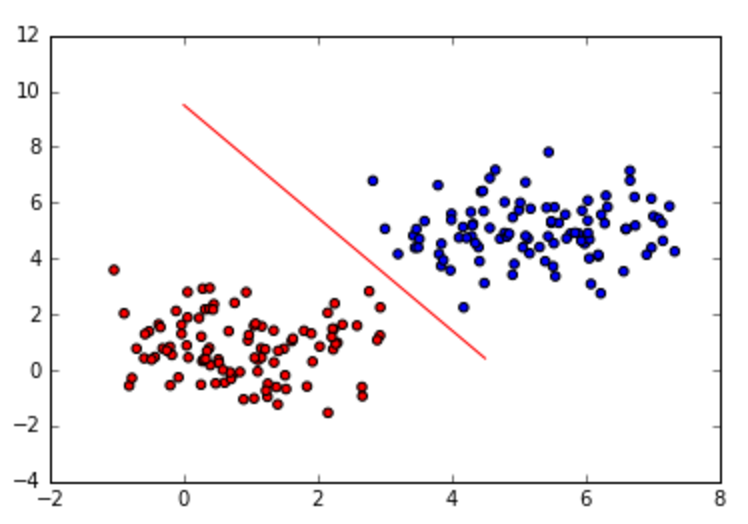
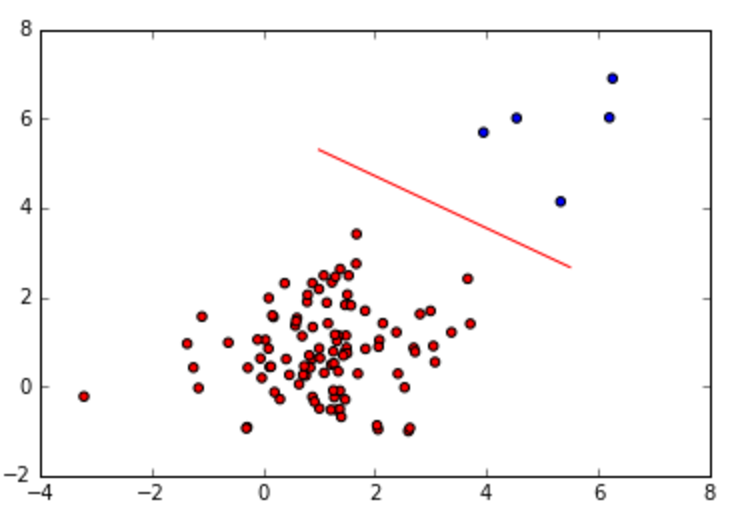
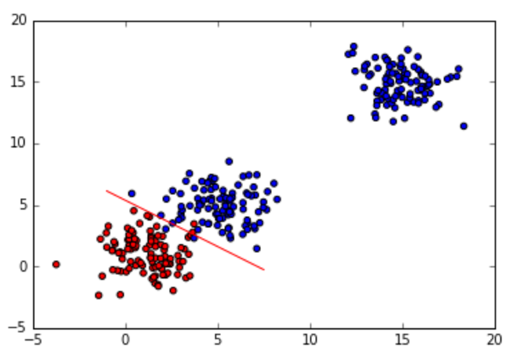
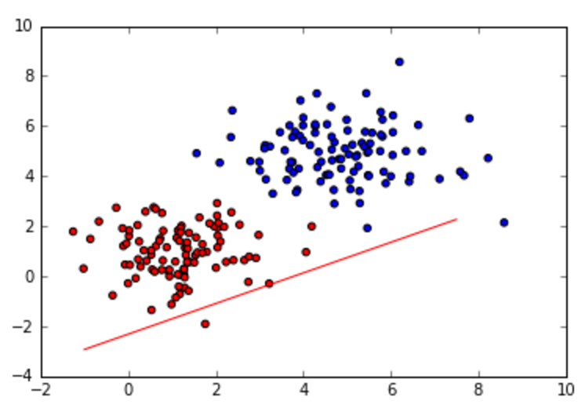

Assignment 7: MAP and Predictive Distribution for Classification
Deadline: March 31, 2017 at 1pm
Part 1: MAP (Probabilistic Discriminative Model)
Write a program in python to implement the least-squares
method for classification. Follow the below instructions.
- Generate two classes of data with the same population
size (N1=N2=100) and sigma = 1.1
- Write code to estimate w using the MAP method,
where the Gaussian prior has mean, m0 = 0, and alpha = 1.0
- Show the estimated w, and Sn
- Draw the decision line, similar to:

- Change the number of the data of one of the clusters:
N1 = 100, N2 = 5, recompute w, and draw the decision line:

- Generate outliers of cluster 2 where (N_outlier=100),
and sigma for all clusters is 2.2,
recompute w, and draw the decision line:

- Change the prior's mean (mu) and covariance (alpha)
to various values, and discuss how they influence the
decision line. The below figure is one of the possible
outcomes (which show a wrong setting of mu and
alpha). Explain how to set mu and alpha properly.

- Discuss how the MAP performs compared to Fisher's
LDA, and show the comparison results between the two.
Part 2: Predictive Distribution: Linear Classification
- Implement the predictive distribution, where the output
is a decision whether a given point belongs to C1 or C2
- Ask the user to enter any new value of x, and your
task is to provide
the decision whether it belongs to C1 or C2, and its
uncertainty information.
Submission
Submit both your code and results in an ipython-notebook format via Canvas by
the deadline.